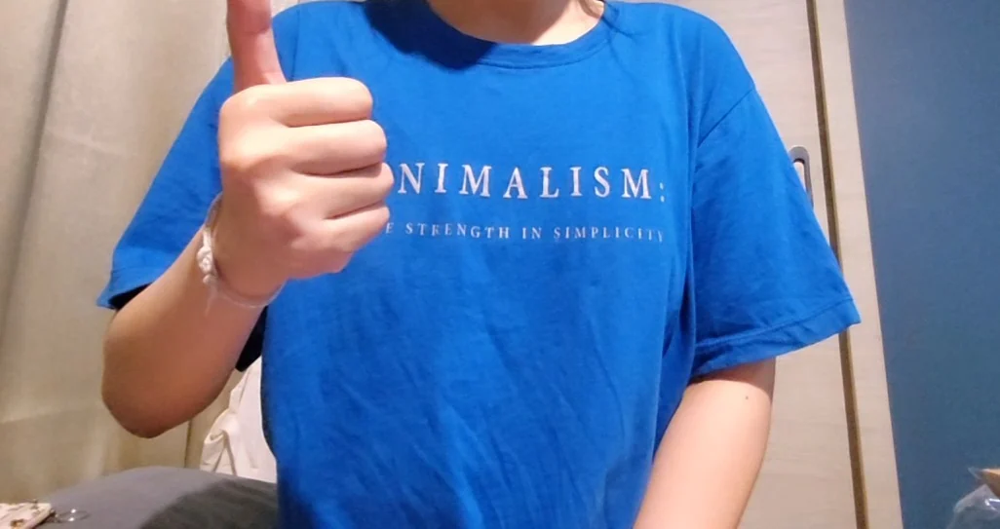
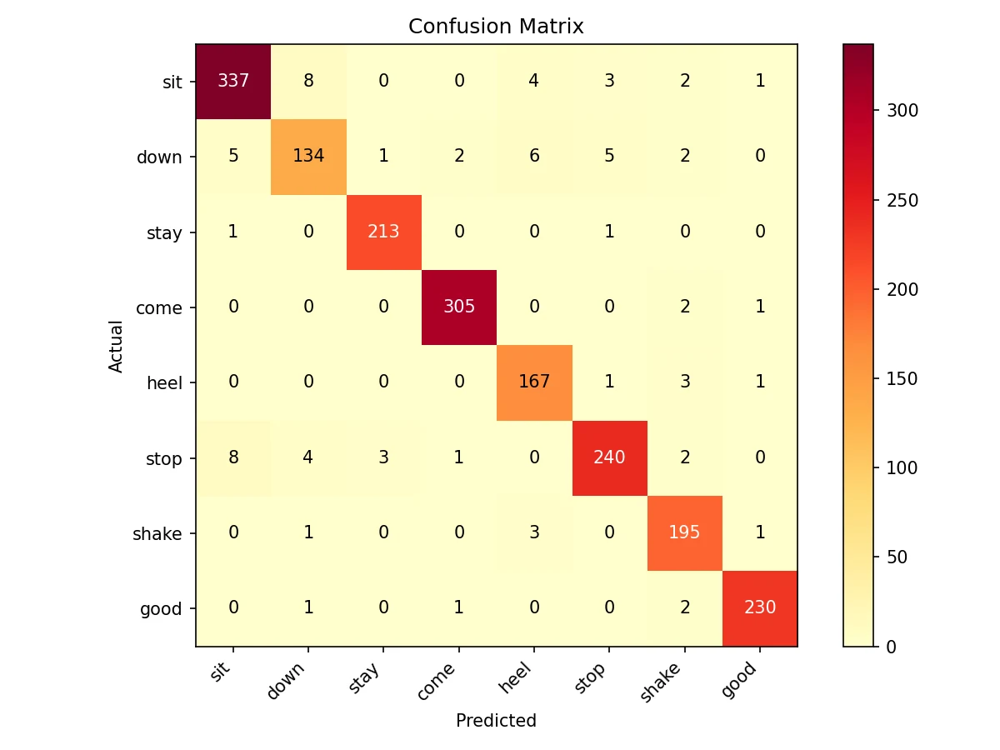

Teach My Dog!
A 2D dog-training game on the web: you show a hand signal to the webcam, and a cartoon dog responds. The hand-sign model is one I trained on clips I recorded myself.
In short: A course project for a team of 3. As team lead I built the game, recorded every training clip and trained the model. My teammates did the report and research.
- When
- Year 3, Term 2 (2026)
- Team / role
- Team lead, team of 3 (course project) · I built the web game, recorded the training clips and trained the model · teammates did the report and research
- Tools
- MediaPipe Hands · KNN classifier · web app (Canvas 2D) · built with Antigravity (AI coding tool)
- Status
- course project

Problem
New dog owners often can’t tell whether the hand signals they give are clear and correct, and there is nothing to check them against. The project: let people practise eight standard dog-training hand signals (Sit, Down, Stay, Come, Heel, No/Stop, Shake, Good/Yes) on a virtual dog that reacts right away.
What I decided
- My own data, my own model. I recorded the training clips myself, 3 clips per signal and a few seconds each (about 1–6 s), instead of using a public dataset.
- Hand landmarks, not raw pixels. MediaPipe finds 21 points on the hand, and each frame becomes 67 values: the points relative to the wrist and scaled to hand size, plus wrist position and movement direction.
- A small, fast classifier. A K-nearest-neighbours model (k = 7), which labels a hand pose by the most similar recorded examples. It is exported to the web page so it runs in real time in the browser.
- Practice as a game. Missions teach one signal at a time (other signals are ignored). A correct signal makes the dog act and earns bones, which buy dress-up and room items. After all 8, free play.
Result
A working web game. The model was trained on 1,897 samples across the 8 signals, and 5-fold cross-validation accuracy was 95.6% (± 0.6%). Demo clips of it in use are kept privately (no public link).
Gallery


My role vs AI
I was team lead, built the web game, recorded every training clip and trained the model. My teammates handled the report and background research. I built the web game with Antigravity, an AI coding tool.